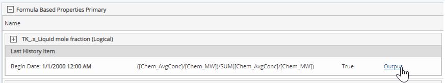
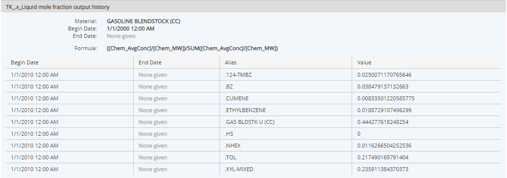

Chemical Formula Based Primary Properties (Primary CL FBPs) are calculated properties that are used for calculations using chemical properties, which will automatically produce a calculation for each chemical in the material. Like regular Primary FBPs, they can be calculated based the intrinsic properties of a material, its chemical properties and material values, without reference to where or how the material is used.
The formula may use:
The formula can be validated when the property is added to the material. It is calculated when the material is saved.
To view the calculated values for a Chemical Formula-Based Primary property on a material:
In the Formula Based Properties Primary section, find the property and click Output.

The value of the calculation for each chemical in the material is displayed. If the calculation has more than one history, each historical value will be shown.
